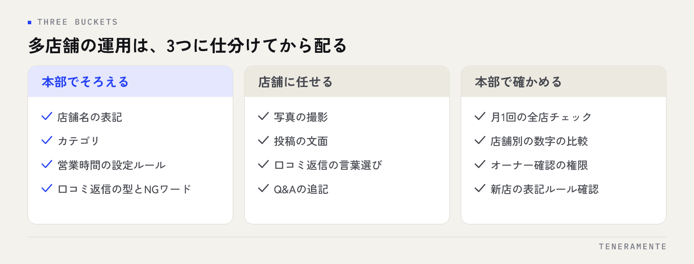

複数の店舗でGoogleビジネスプロフィールを運用していると、同じ会社なのに店舗によって見え方がまるで違う状態になります。多店舗のMEO運用でつまずくのは担当者の熱意の差ではなく、本部でそろえる項目と店舗に任せる項目を分けていないことが原因です。分け方が決まっていないと、どの店舗も「全部自分で判断する」ことになります。
📌 この記事の結論
先にやるのは「そろえる」「任せる」「確かめる」の3つに作業を仕分けることです。店舗情報の表記と口コミ返信の型は本部でそろえ、言葉選びと写真は店舗に任せ、月1回だけ同じ項目で全店を見比べる。この形にすると、店舗数が増えても運用の質が落ちにくくなります。
01多店舗のMEO運用でつまずくのは、店舗ごとの差
1店舗の運用なら、担当者が覚えた手順をそのまま続けられます。これが3店舗、10店舗になると、同じ作業が別々の判断で行われるようになります。
差が出やすいのは、店舗名の末尾に地名を足している店と足していない店、祝日の営業時間を入れている店と入れていない店、口コミに返信している店と放置している店といった部分です。1店舗だけ見れば小さな違いですが、検索結果には店舗が横に並びます。並んだときに、差はそのまま比較されます。
もうひとつの問題は、差の原因が見えないことです。ある店舗の表示順が落ちたとき、担当者には「何かが変わった」ことしか分かりません。他店と何が違うのかを比べる手段がないため、改善の手がかりが本人の経験だけになります。ここを仕組みで埋めるのが多店舗運用の中心で、やる気の底上げよりも、判断する項目を減らすほうが先に効きます。
02本部でそろえる項目と、店舗に任せる項目を分ける
最初の作業は、運用のタスクを3つに仕分けることです。紙1枚で済みます。

| 区分 | 具体例 | 理由 |
|---|---|---|
| 本部でそろえる | 店舗名の表記、カテゴリ、営業時間の設定ルール、口コミ返信の型、NGワード | 店舗ごとに判断がぶれると、会社としての情報が揃わない |
| 店舗に任せる | 写真の撮影、投稿の文面、口コミ返信の言葉選び、Q&Aの追記 | 現場しか知らない情報が価値になる部分 |
| 本部で確かめる | 月1回の全店チェック、店舗別の数字の比較 | 店舗単独では他店と比べられない |
仕分けの基準は単純です。**「店舗ごとに違っていい理由があるか」**を問うだけです。写真は店によって建物も商品も違うので、違っていい。店舗名の表記は違っていい理由がないので、そろえる。この表があると、店舗に渡す指示が「全部やってください」から「この3つだけお願いします」に変わります。現場が止まる原因は作業量よりも、どこまでが自分の裁量か分からないことにあります。
仕分け表は、店舗の担当者と一緒に作る
本部だけで作ると、現場の実情に合わない項目が混ざります。1店舗の担当者に、いま実際にやっている作業を書き出してもらってから仕分けると、抜けの少ない表になります。作った表は店舗が見られる場所に置き、迷ったときに戻れるようにしておきます。
03店舗情報は、表記ゆれを先に潰す
そろえる作業のうち、最初に手を付けるのは店舗情報の表記です。ここは時間がかかりませんし、効果が分かりやすい部分です。
見る項目は4つあります。
- 店舗名：正式名称に統一し、「◯◯店」の付け方・全角と半角・スペースの有無をそろえます。地名やキーワードは足しません
- 住所・電話番号：建物名の省略、ハイフンの種類、市外局番の表記を、自社サイトの店舗一覧ページと一字一句そろえます
- カテゴリ：メインは業態が同じなら全店で同じものに。サブは店舗の設備や扱う商品に合わせて増減して構いません
- 営業時間：祝日・年末年始の特別営業時間を、本部でまとめて入れる日を決めます
このうち店舗名・住所・電話番号の3つは、サイトや他のサービスの掲載内容とそろえる必要があります。考え方はNAP情報の統一とはに整理しています。カテゴリの選び方で迷う場合はGoogleビジネスプロフィールのカテゴリの選び方が判断の材料になります。
多店舗の場合、ずれは新しく開いた店舗から生まれます。開店の作業手順に、表記のルールを確認する項目を1つ足しておくと、後からまとめて直す手間が減ります。
04口コミは「型は本部、言葉は店舗」
口コミ対応は、多店舗でもっとも差が出る部分です。返信している店とそうでない店が混在しやすく、しかも外からよく見えます。本部で用意するのは、返信の型とルールです。
- 返信する範囲：すべてか、低評価だけか。全店で同じにします
- 返信までの目安：何営業日以内に返すか
- 書かないこと：個人が特定できる情報、他店や他社への言及、定型文の丸写し
- 迷う内容が来たときの連絡先：本部の誰に相談するか
一方で、返信の文章そのものは店舗に書かせます。本部が作った定型文を全店で使うと、同じ文章が並んでいることが読む人に伝わります。来店した状況を知っているのは店舗の担当者なので、言葉は現場のものが適切です。
型をそろえるのは返信の質を均すためで、文章を同じにするためではありません。
低評価が付いたときの考え方は評価の低い口コミへの対応にまとめています。多店舗で起きやすいのは、1店舗の低評価に本部が反応して全店へ一律の指示を出してしまうことです。原因が店舗固有であれば、その店舗の中で直すほうが早く済みます。
05投稿と写真は、使い回せる素材を本部が用意する
投稿（Googleビジネスプロフィールの更新）と写真は、店舗に任せる部分です。ただしゼロから考えさせると止まるため、本部が素材と枠を用意します。
- 季節やキャンペーンの共通素材：全店で使える画像と、本文の下書き
- 投稿の頻度の目安：月に何回出すかだけ決め、内容は店舗が選ぶ
- 撮る写真のリスト：外観、入口、内観、駐車場、スタッフ。どの角度で撮るかの見本を1枚ずつ
共通素材をそのまま使うのではなく、店舗が1行足してから出す形にします。「◯◯店では今週◯◯を置いています」のような1行で、同じ素材でも店ごとに違う投稿になります。投稿のネタ切れへの対処はGoogleビジネスプロフィールの投稿ネタにまとめています。
写真については、枚数を競わせないことが大事です。同じ角度の写真が並んでも、見る人の情報量は増えません。リストの種類を一通りそろえ、変わったときに差し替える形で足ります。
06店舗ごとの差をなくす月1回のチェック項目
確かめる作業は、月1回まとめて行います。全店を同じ項目で見るのがポイントです。
| 見る項目 | 確かめ方 |
|---|---|
| 店舗名・住所・電話番号 | ルール通りの表記になっているか。サイトの店舗一覧とそろっているか |
| 営業時間 | 翌月の祝日・特別営業時間が入っているか |
| 未返信の口コミ | 期限を超えて返信していないものがあるか |
| 投稿 | 先月、決めた回数を出せているか |
| 写真 | リストにある種類がそろっているか。古いものが残っていないか |
| オーナー確認の状態 | 権限が切れていないか。担当者の異動で外れていないか |
最後の項目は見落としやすい部分です。担当者の異動や退職で、店舗のプロフィールを誰も編集できない状態になることがあります。人事の異動があった月は、権限の一覧を必ず見てください。
店舗数が多い場合は、週ごとに担当エリアを分けて回す形でも構いません。重要なのは同じ項目で見ることです。項目が店舗ごとに違うと、差が見つかりません。単店舗の運用で見る項目はGoogleビジネスプロフィールの月1チェックリストを土台にしてください。
07店舗別に数字を並べ、差の理由を探す
チェック項目の確認が終わったら、数字を店舗別に並べます。管理画面から、表示回数・ルート検索・電話・ウェブサイトへの遷移を店舗ごとに取り出せます。
注意点は、店舗間で数字の大小を直接比べないことです。駅前の店と郊外の店では、周辺の検索数そのものが違います。比べるのは次の2つです。
- 同じ店舗の前月との変化：落ちている店舗がないか
- 店舗内での比率：表示回数に対してルート検索や電話が極端に少ない店舗はないか
比率が低い店舗は、見られてはいるものの行動につながっていない状態です。写真が少ない、営業時間が空欄、口コミが放置されているなど、チェック項目で引っかかる要素とたいてい重なります。
店舗別の数字を評価に直結させない
数字を店舗の成績として扱うと、口コミの依頼が強引になったり、実態と違う情報を載せたりといった動きが出ます。数字は差の原因を探すための材料として使い、改善したかどうかはチェック項目の充足で見るほうが健全に回ります。
店舗数が多い場合、プロフィールの管理はどうまとめればよいですか？
店舗名にエリア名やサービス名を足すと表示されやすくなりますか？
店舗ごとに運用の温度差があります。どこから手を付けるべきですか？
08まとめ：そろえる・任せる・確かめるの3つに分ける
多店舗のMEO運用は、全店に同じ努力を求めると続きません。店舗名や営業時間の表記、口コミ返信の型といった「違っていい理由がないもの」は本部でそろえ、写真や投稿の文面、返信の言葉は店舗に任せる。この線引きが運用の土台になります。
そして月1回、同じ項目で全店を見比べる。数字は店舗間の大小ではなく、前月との変化と店舗内の比率で読む。この形なら、新しい店舗が増えても手順をそのまま渡せます。仕組みの目的は、判断する項目を減らすことだと考えてください。
TENERAMENTEでは、複数店舗のGoogleビジネスプロフィールについて、表記ルールの整備から月次の確認までを運用の形に落とすところからお手伝いしています。進め方はMEO対策のページにまとめていますので、店舗ごとの差をどう埋めるか迷っている場合はお問い合わせよりお気軽にご相談ください。